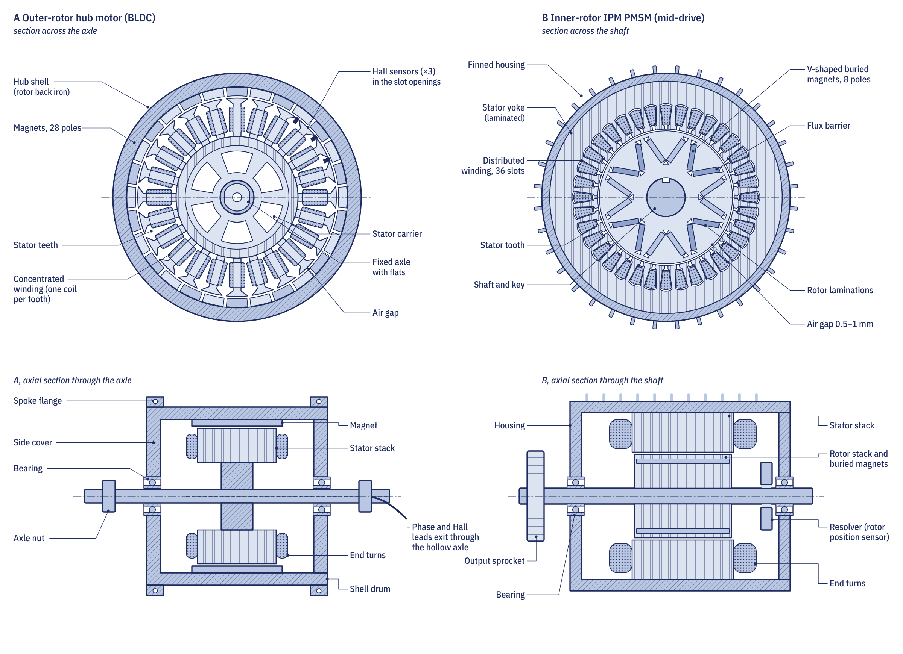

The energy chain
A petrol motorcycle turns chemical energy into heat and then into work in the cylinder, and a small air-cooled engine manages only 12 to 20 per cent of that in town riding. An electric motorcycle skips the heat engine. The battery delivers electricity directly, and each step loses only a few per cent: roughly 96 per cent in the battery, 97 per cent in the controller, around 90 per cent in the motor averaged over a real ride, and 96 per cent in the chain or belt. Multiplied together, about 80 per cent of the battery's energy reaches the rear wheel.
In practice, a 125-equivalent electric commuter uses about 2 to 4 kWh per 100 km at the battery terminals, depending on speed, load and hills. A 125 cc petrol commuter burning 2.5 litres per 100 km uses about 22 kWh of fuel energy for the same distance.

The battery pack
The traction battery is built from lithium-ion cells joined in series to raise the voltage and in parallel to raise the capacity. A pack described as 20S10P has 20 groups in series, each made of 10 cells in parallel. With common 21700 cells of 3.6 V and 5.0 Ah, that gives 72 V nominal, 50 Ah and 3.6 kWh from 200 cells weighing about 14 kg, or about 20 kg once holders, busbars, electronics and the case are added. At 3.6 kWh per 100 km that is roughly 100 km of range, which is the scale of a 125-equivalent commuter.
The cell chemistry matters. Nickel manganese cobalt (NMC) cells store the most energy for their weight. Lithium iron phosphate (LFP) cells are heavier for the same range but last many more charge cycles, contain no cobalt or nickel and are more stable if damaged, so they are spreading in commuter and battery-swap fleets.

The battery management system
Every lithium pack has a battery management system (BMS). It measures the voltage of every series group, several temperatures and the pack current. From these it estimates the state of charge shown on the dashboard and the state of health of the pack, it balances cells that have drifted apart, and it protects the pack by cutting the current if any cell goes too high, too low, too hot or too cold. It also tells the controller and charger how much current they may draw or deliver, which is why an electric motorcycle gives less power when the battery is cold, hot or nearly empty.
The motor controller
The battery supplies direct current, but the motor needs three-phase alternating current whose frequency follows the wheel speed. The motor controller, also called the inverter, makes that current with six fast power switches: MOSFETs on low-voltage machines, IGBTs or silicon-carbide devices on high-voltage ones. It reads the throttle, the rotor position and the phase currents, and it regulates the motor's torque. Throttle maps and ride modes are simply different instructions to this unit.
Before the main contactor connects the battery, a pre-charge circuit charges the controller's capacitors gently through a resistor. Without it, closing the contactor onto empty capacitors would cause an inrush of thousands of amps that could weld the contactor tips.

The motor
The traction motor is almost always a brushless permanent-magnet machine. The copper windings are on the stationary stator, where they can be cooled, and the magnets are on the rotor. Two layouts dominate.
- Hub motor. The motor is built into the rear wheel. There is no chain, belt or gearbox to maintain. Hub motors suit electric mopeds and e-bodas such as the machines in the electric moped and e-boda type.
- Mid-drive motor. The motor sits in the frame and drives the wheel through a chain, belt or gear reduction. It keeps weight off the wheel, which helps the suspension, and lets the motor spin faster and smaller. Most full-size electric motorcycles use this layout.

An electric motor produces full torque from zero speed and keeps a useful spread of torque across a wide speed range, so a single fixed ratio is enough. That is why an electric motorcycle has no clutch and no gearbox.
Regenerative braking
When the rider closes the throttle or touches the brake, the controller can reverse the motor's torque so that it works as a generator, sending energy back into the battery. A 250 kg machine and rider at 50 km/h carry about 6.7 Wh of kinetic energy, and perhaps 4 Wh of it comes back after losses in the tyre, drivetrain, motor, controller and battery. In stop-start city riding that adds up to a useful saving and less brake pad wear, but the friction brakes still do the hard stops.
The 12 V system and charging
Lights, horn, indicators and the dashboard still run at 12 V, as on a petrol motorcycle. A DC-DC converter steps the traction voltage down to about 13.5 to 14.4 V. Charging happens through an on-board charger with a mains inlet, an off-board charger brick, a DC fast-charge port on larger machines, or by swapping the battery. Battery swapping, used by Gogoro in Taiwan and by several operators in East Africa, replaces hours of charging with a stop of a couple of minutes, and separates the cost of the battery from the cost of the motorcycle.
Packs above 60 V DC count as high voltage, and a so-called 72 V pack reaches 84 V when full. Work on traction circuits needs safe isolation, insulated tools and training. Orange cables mark the high-voltage circuit on electric motorcycles.
What still needs maintenance
An electric motorcycle needs no engine oil, spark plugs, valve adjustment, air filter or exhaust work. Brakes, tyres, wheel and motor bearings, the final drive and the connectors still need regular checks. Chains wear faster than on a petrol machine of similar power because of the motor's instant torque, so slack and wear length are checked as described in our chain maintenance guide. Module 6 of the course starts with the architecture of an electric two-wheeler and continues with batteries and the BMS.
How the pack is charged and stored decides how long it lasts; our guide to electric motorcycle battery care sets out the habits that matter. For faults, the Repair section has pages for the battery, controller, motor and charge port.
Go deeper
- Chapter 6.1: Architecture of an electric two-wheeler: the energy chain end to end
- Chapter 6.2: Electric motors: hub and mid-drive motors, torque and back-EMF
- Chapter 6.3: Motor controllers and regenerative braking
- Equations summary: pack energy, C-rate and motor torque constant
- Electric motorcycles quiz: test yourself on Module 6
- Electric motor diagnosis: the repair job sheet
- Electric bike will not charge: checks in order
Frequently asked questions
Do electric motorcycles have gears?
Almost all use a single fixed ratio with no gearbox or clutch. The motor gives full torque from standstill and works across a wide speed range, so gears are not needed.
What does a BMS do on an electric motorcycle?
It measures every cell group's voltage, the temperatures and the current, estimates state of charge, balances the cells and cuts the current if any limit is exceeded. It also tells the controller and charger how much current they may use.
How efficient is an electric motorcycle?
About 80 per cent of the battery's energy reaches the rear wheel. A small petrol engine in town riding converts only about 12 to 20 per cent of its fuel energy into work.
What is the difference between a hub motor and a mid-drive motor?
A hub motor is built into the wheel and needs no chain or belt. A mid-drive motor sits in the frame and drives the wheel through a chain, belt or gears, keeping weight off the wheel.
Written by Transitions Lab for the Motopedia open motorcycle course. Text and illustrations are licensed CC BY-SA 4.0. Figures and values come from the course modules; see sources and credits.